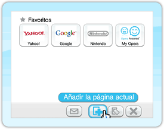
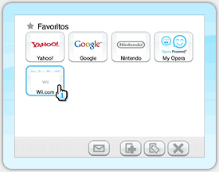
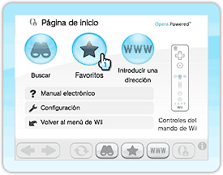
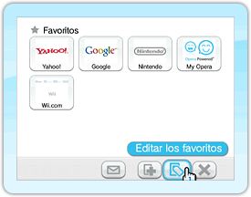
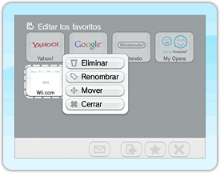
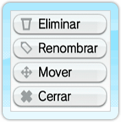
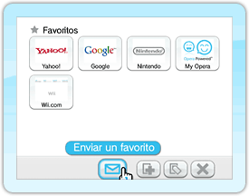
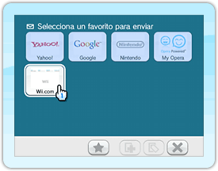
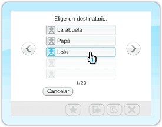

Crea, modifica y borra vínculos de acceso rápido en tu lista de favoritos.
Como añadir una página web a tu lista de favoritos
Puedes incluir un máximo de 56 sitios web en tu lista de favoritos.
Encuentra la página web que buscas usando las opciones o .
Cuando la página se abra, apunta con el mando de Wii al icono y oprime para abrir la pantalla de favoritos.

Apunta al icono y oprime . ¡La página web quedará incluida en tu lista de favoritos!
Como ver un favorito de la lista

Una vez que tengas al menos un favorito en tu lista, apunta al icono () y oprime para ver la pantalla de favoritos. Apunta al sitio web que deseas ver y oprime para que el navegador acceda directamente a esa página.
Como modificar un favorito

Apunta al icono y oprime .
Se abrirá la pantalla de favoritos.

Apunta al icono y oprime para modificar algún favorito.

Apunta a la página web que deseas modificar y oprime para aplicar los cambios.

Apunta al icono de la acción que quieras realizar y oprime .
Sigue las instrucciones que se mostrarán en pantalla.
Como enviar un favorito a un amigo Wii
Apunta al icono y oprime . Se abrirá la pantalla de favoritos.

Apunta al icono y oprime . La pantalla cambiará de color.

Apunta a la página web que deseas enviar a tu amigo Wii y oprime para acceder a la agenda.
 Apunta al amigo Wii al que le quieres enviar la página web y confirma con . Se mostrará una pantalla en la que podrás escribir un mensaje.


 y oprime
y oprime  y oprime
y oprime